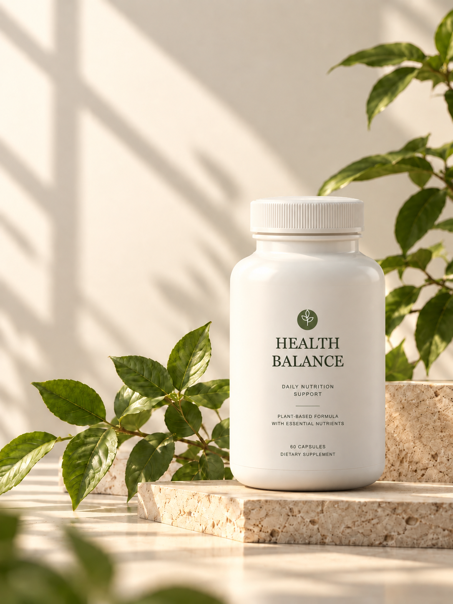
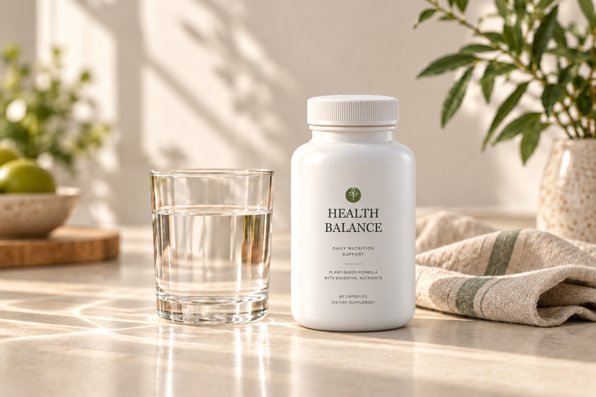
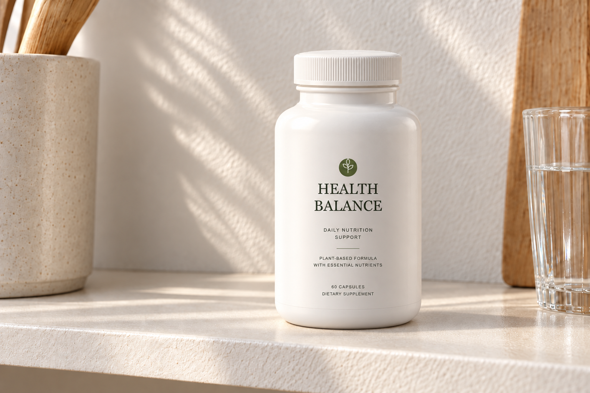
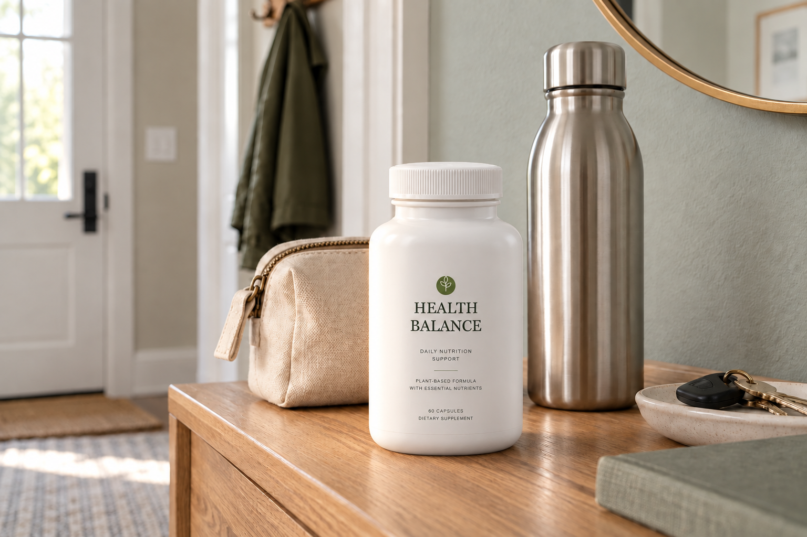
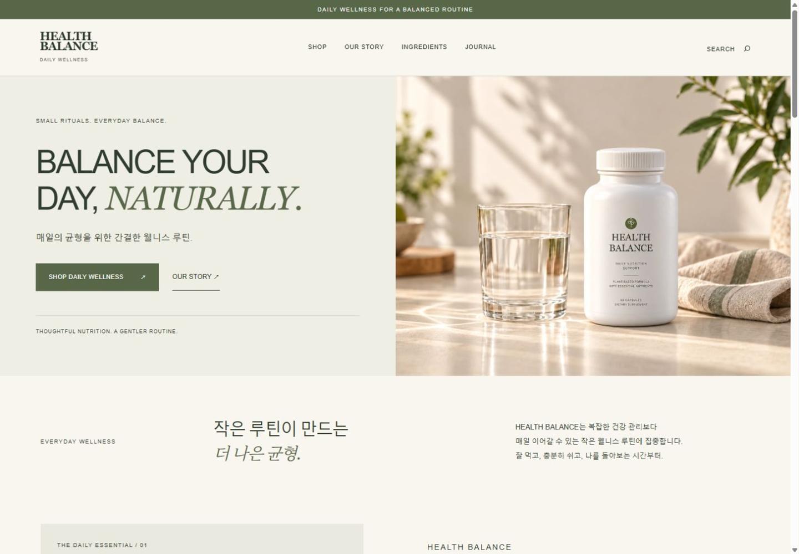
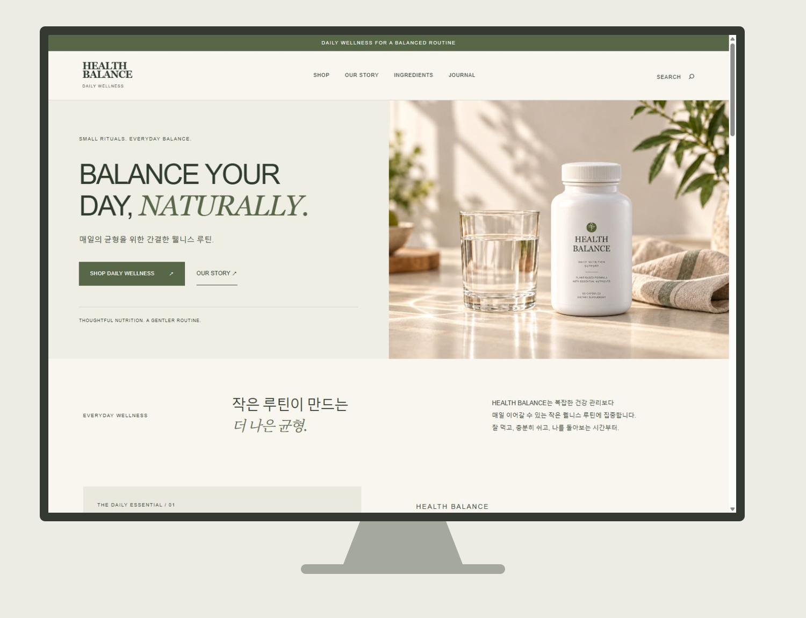
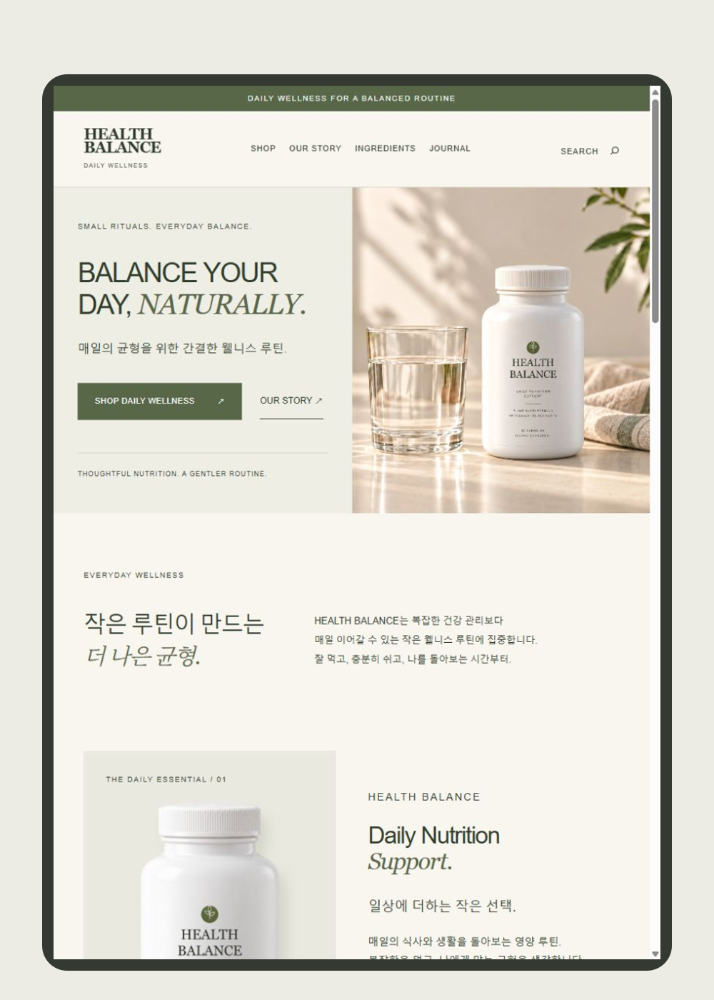
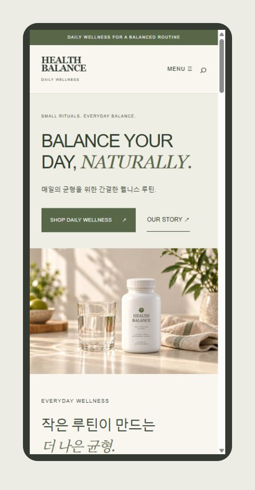
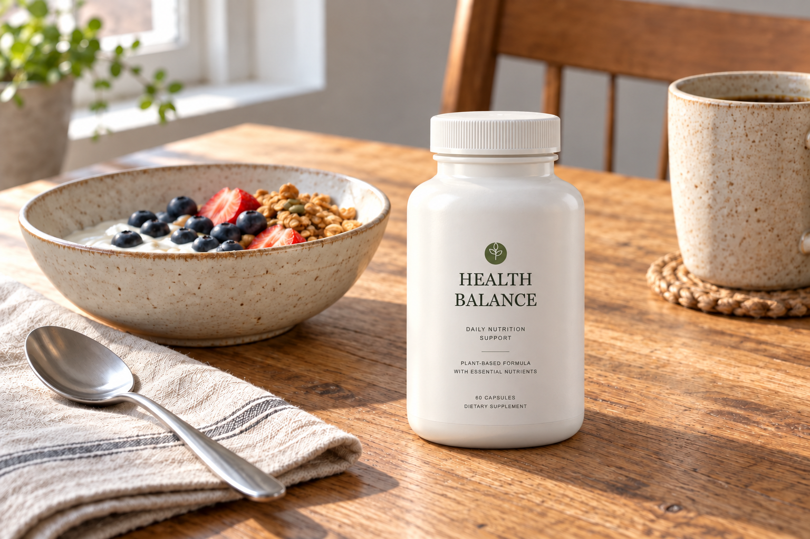
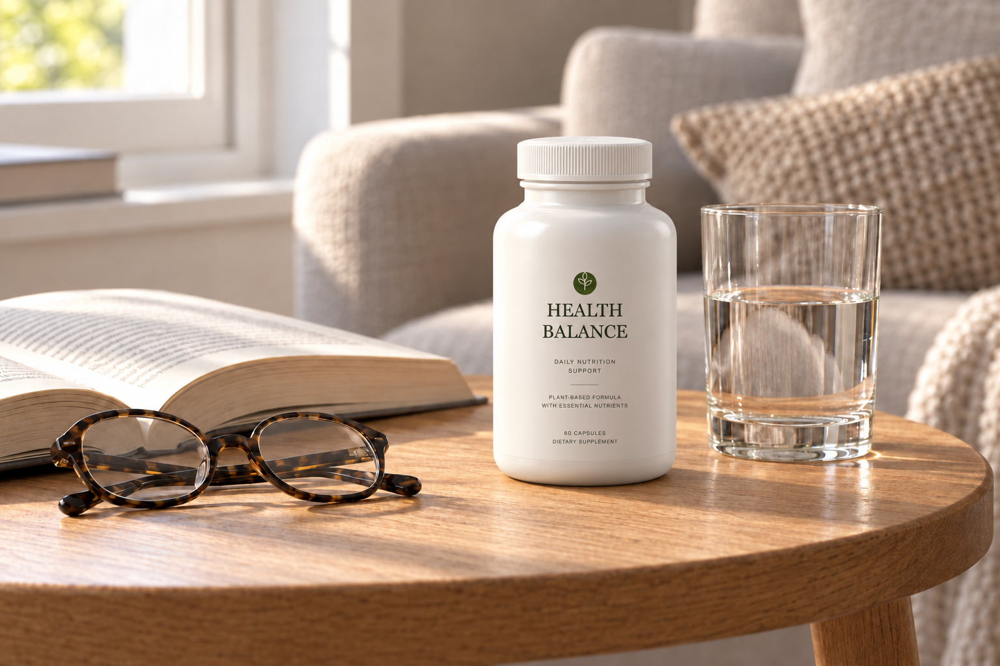

활력 있는 하루
하루의 시작부터 일상의 리듬까지.
에너지와 활력을 주제로 구성한 케어 이야기.
THE EVERYDAY WELLNESS PROJECT / 02

더 좋은 하루는 작은 균형에서 시작되니까.
01 — DETAIL PAGE FIRST
HTML / CSS DESIGN CONCEPT제품을 처음 접하는 사용자를 위해
브랜드 소개 → 정보 확인 → 일상 활용 순으로 구성했습니다.
모바일에서는 설명과 시안을 한 열로 제공합니다.
자연광과 여백으로 부드럽게 시작합니다.
짧은 문장과 분명한 정보 위계를 만듭니다.
제품과 생활의 자연스러운 연결을 담습니다.
아래 구성과 문구는 포트폴리오용 디자인 콘셉트입니다.
A small moment. A better everyday.

익숙한 공간에 놓인 작은 습관.
HEALTH BALANCE가 제안하는 일상의 장면입니다.
하나의 성분보다 전체의 조화를 생각합니다.
매일의 식사와 생활을 살피는 것부터 시작해 보세요.
잘 먹고, 충분히 쉬고, 필요한 부분을 살피는 일.
기능성 소개 영역 · 아래 키워드는 디자인 예시입니다.
하루의 시작부터 일상의 리듬까지.
에너지와 활력을 주제로 구성한 케어 이야기.
내 식탁에서 놓치고 있는 것은 무엇일까요?
비타민·미네랄의 균형을 살펴보는 영양 이야기.
일회성의 변화보다 꾸준한 관심.
식사와 휴식, 생활 습관을 함께 돌아보는 이야기.
가상 브랜드의 정보 디자인 예시입니다. 실제 제품의 효능·함유 성분을 의미하지 않습니다.

영양 성분부터 함량까지, 필요한 정보를 한눈에.
| 정보 항목 | 표시 내용 |
|---|---|
| 주요 영양 성분 | 성분명 · 영양소 분류 |
| 1일 섭취량당 함량 | 1일 섭취량 기준의 함량 표기 |
| 영양성분 기준치 비율 | 기준치 대비 비율 표기 |
| 원료 및 알레르기 정보 | 원료명 · 알레르기 유발 성분 구분 |

하루의 식단과 생활 패턴을 살펴보세요.
제품에 안내된 섭취량과 주의사항을 확인하세요.
식사와 쉼을 함께 챙기는 일상을 만들어 보세요.
나를 위한 작은 여유, HEALTH BALANCE
02 — BRAND WEBSITE
DESKTOP / TABLET / MOBILE브랜드 소개부터 제품 탐색, 일상의 루틴까지.
세 가지 화면에서 자연스럽게 이어지는 브랜드 웹사이트입니다.
브랜드 웹사이트 방문하기 ↗




03 — EVERYDAY MOOD
아침의 식탁부터 오후의 테이블까지.
같은 온도의 빛, 일상에 자연스럽게 놓인 헬스밸런스.

따뜻한 햇살과 아침 식사, 나를 챙기는 작은 시간.

부드러운 햇살과 한 권의 책, 나를 돌보는 작은 여유.
04 — BRAND PROMOTION & CAMPAIGN
WEBSITE / STORE / CAMPAIGN브랜드를 만나는 첫 순간부터
일상에 더하는 작은 습관까지.
하나의 메시지, 세 가지 접점.
거창하지 않아도 괜찮아요.
매일의 작은 선택이 더 나은 균형을 만듭니다.
브랜드 웹사이트 · 온라인 스토어 · 캠페인 적용을 위한 디자인 시안입니다.
05 — VISUAL LANGUAGE
COLOR / TYPOGRAPHY따뜻한 아이보리에 옅은 세이지와 샌드 베이지를 더했습니다.
차분한 웜그레이로 중심을 잡아
제품과 일상의 사진이 편안하게 어우러집니다.
A sense of balance.
매일의 작은 균형.
16px 본문과 선명한 대비, 편안한 줄 간격.06 — PROJECT NOTES
건강한 일상을, 더 편안한 언어로.
HEALTH BALANCE는 건강보조식품을 주제로 한 브랜드·상세페이지 디자인 콘셉트입니다. 제품 이미지를 먼저 보여주고, 상세페이지와 반응형 홈페이지, 일상의 무드, 디자인 시스템으로 이어지는 흐름을 구성했습니다.
HEALTH BALANCE